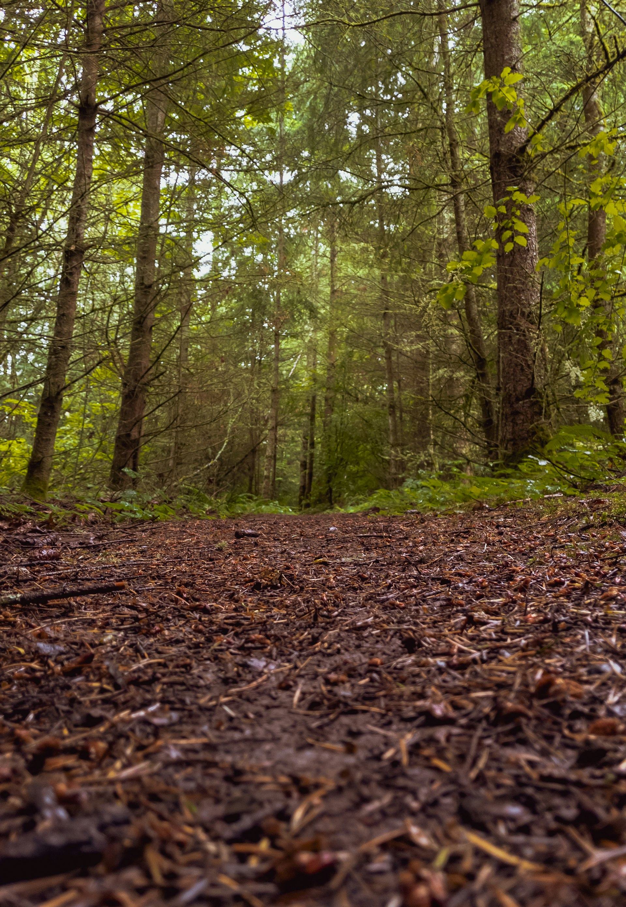

Safety & Leave No Trace
Protecting yourself, others, and the wilderness we all cherish

Protecting yourself, others, and the wilderness we all cherish
The Pacific Northwest's trails are a precious resource. By following Leave No Trace principles and safety best practices, we ensure these wild places remain pristine for generations to come — and that everyone returns home safely.
Learn More: These principles are from the Leave No Trace Center for Outdoor Ethics. Visit their website for comprehensive resources and training.
Always carry these items on every hike, no matter how short. They can save your life in an emergency situation. The 10 Essentials are organized into functional systems rather than individual items.
911
For immediate life-threatening emergencies — always call 911 first
Contact the appropriate county for non-emergency rescue coordination, overdue hikers, or to report incidents after calling 911.
Trail conditions, closures, and general information
For trails in national parks (Rainier, Olympics, North Cascades)
Now that you know how to stay safe and protect our wilderness, explore our collection of Pacific Northwest trails and plan your next adventure.
Discover Trails